Dar visibilidad al desembarco.
Construir una primera impresión fuerte y consistente para la marca en el mercado argentino.
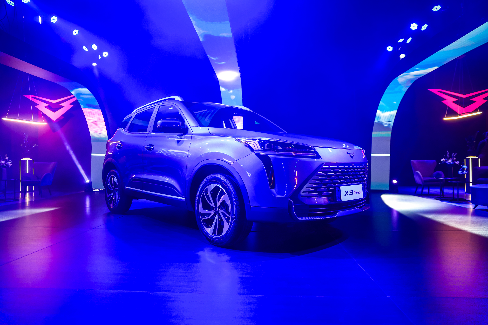
Reporte de evento · Argentina
Una mirada ejecutiva sobre la presentación oficial de Kaiyi en Argentina: experiencia, contenidos, amplificación, prensa y resultados del lanzamiento.
01 · Objetivo
El evento fue pensado como el punto de partida público para Kaiyi en Argentina: presentar la marca, poner en escena su propuesta de producto, generar contenido propietario y activar una conversación amplificada por prensa, influencers, paid media y canales orgánicos.
Construir una primera impresión fuerte y consistente para la marca en el mercado argentino.

Ordenar el relato alrededor de los modelos disponibles y del lanzamiento de la SUV híbrida.
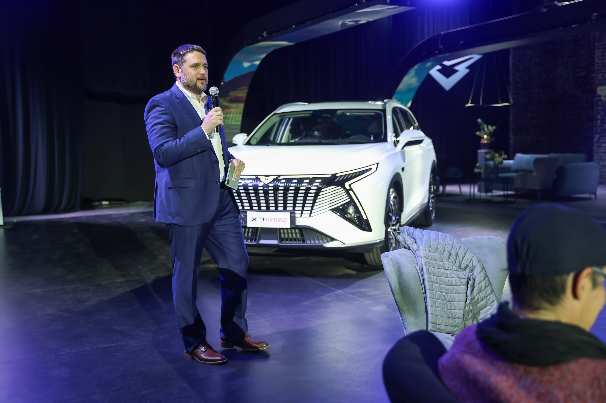
Generar materiales audiovisuales, cobertura editorial y publicaciones sociales para extender la vida del lanzamiento.
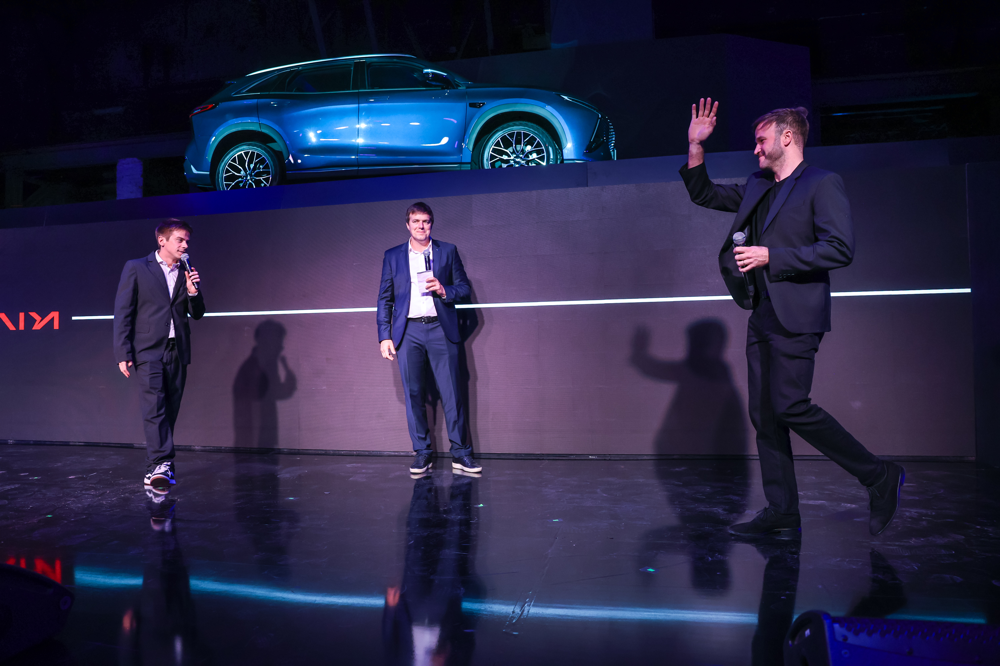
02 · Venue y asistentes
El evento se realizó en Arena Estudios, ubicado en Av. Don Pedro de Mendoza 965, La Boca, Buenos Aires. El venue funcionó como escenario de presentación, punto de encuentro y set de contenido para introducir oficialmente a Kaiyi en Argentina.
Asistieron medios de nicho, dueños de concesionarias, potenciales clientes y referentes de la industria automotor argentina.
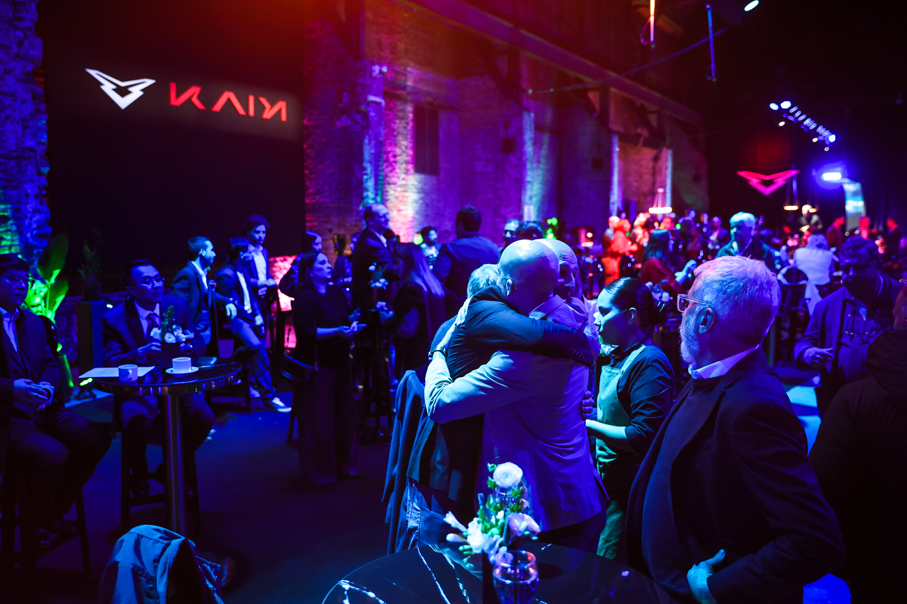
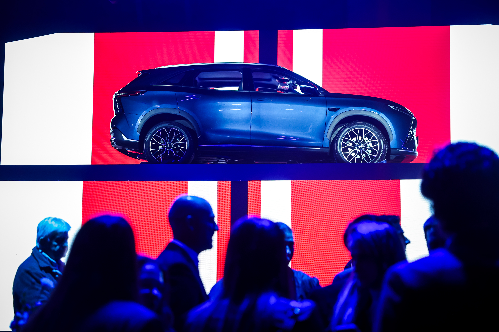
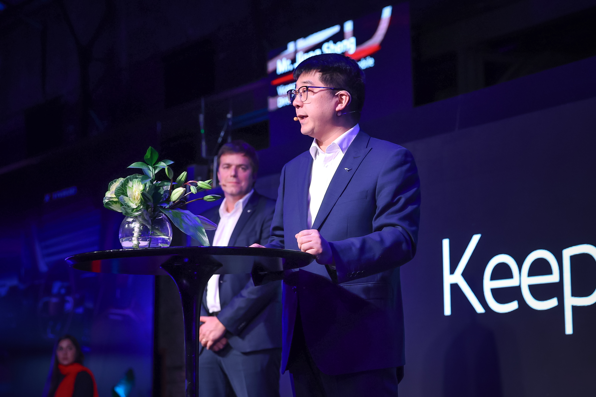
03 · Videos producidos
El evento contó con piezas desarrolladas para instalar estética, expectativa y recordación. Estos materiales permitieron abrir el reporte, vestir la experiencia y extender la conversación en redes.
Contenido publicado antes del evento para anticipar la presentación y activar interés.
Ejemplo de los contenidos producidos para construir identidad visual, clima de lanzamiento y material de apoyo para la experiencia.
04 · Influencers
La estrategia combinó perfiles de automotive, lifestyle y creadores con afinidad de audiencia para transformar la asistencia al evento en contenido distribuido en distintas plataformas. Peto Colombo acompañó la experiencia como host del evento.
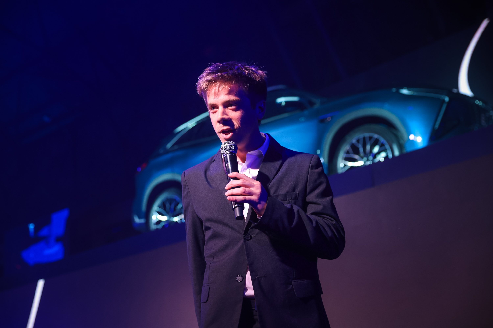


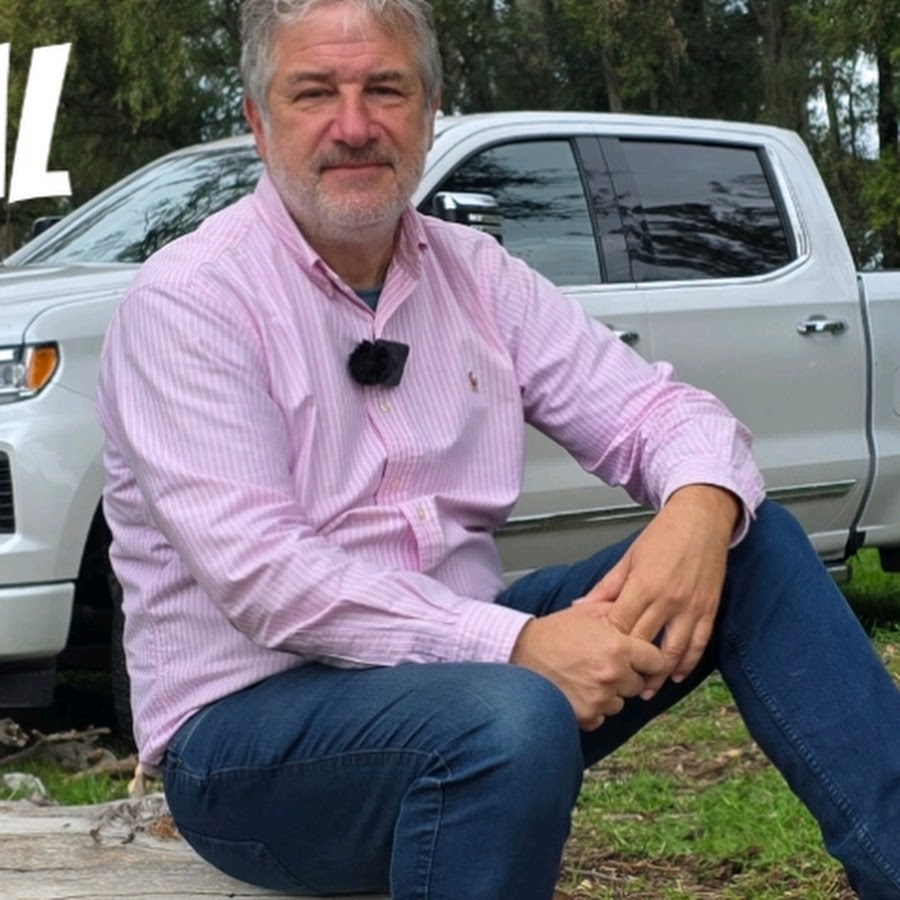

Resultados de contenidos
Se relevaron 17 piezas o formatos con resultados reportados entre Instagram Reels, TikTok, Facebook Reels, YouTube Shorts y YouTube Video. Matías Antico fue el perfil de mejor performance.
Más contenidos destacados
07 · Medios y prensa
El evento generó una respuesta editorial relevante, con notas enfocadas en la presentación oficial de Kaiyi en Argentina, la gama de modelos y el lanzamiento del X7 Hybrid.
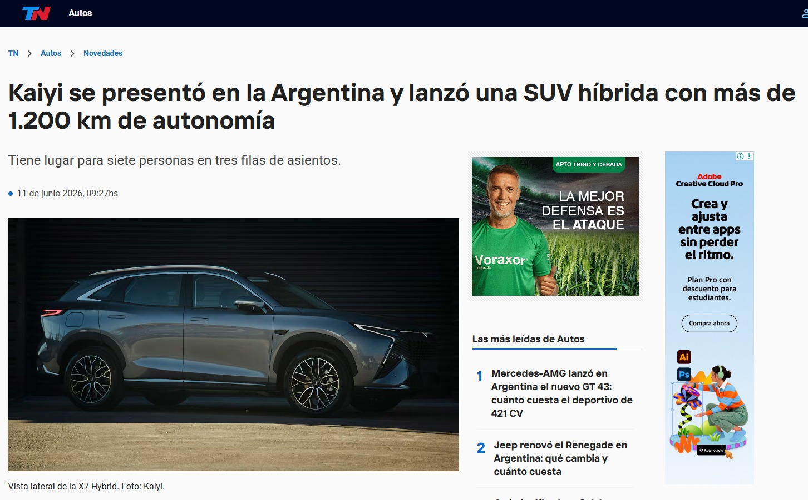
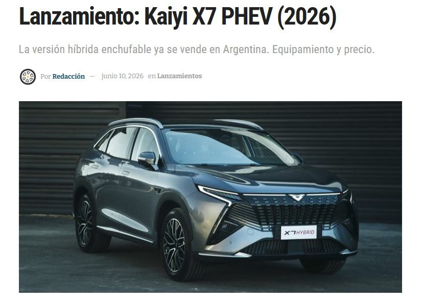
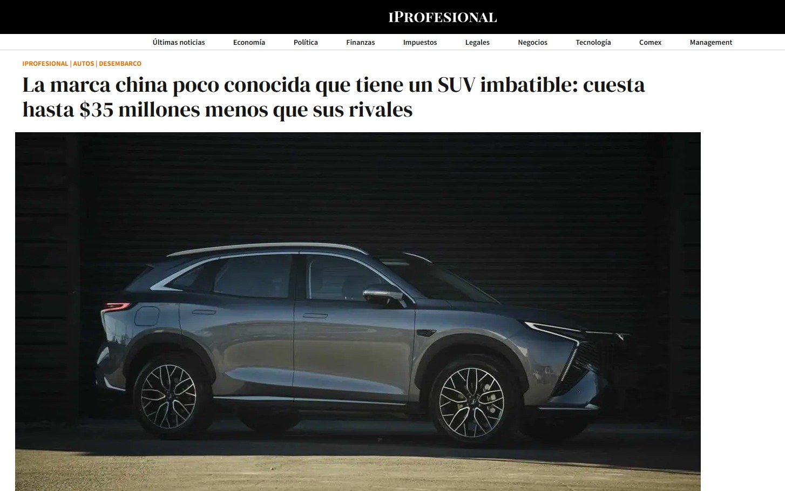
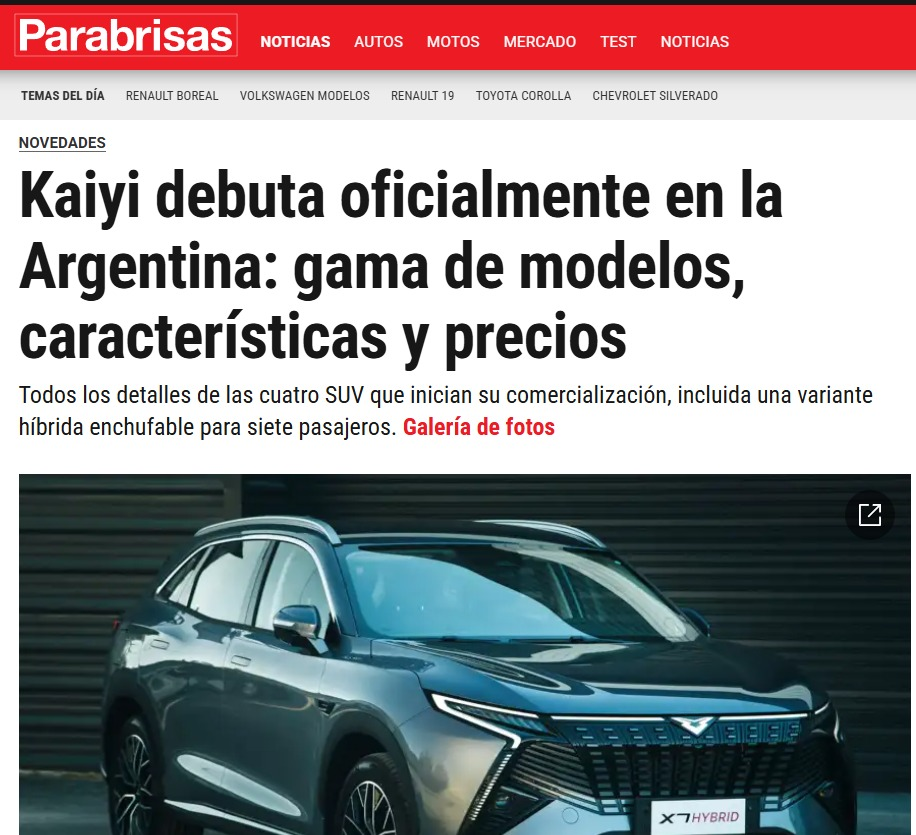
08 · Paid Media + medios directos · 26 mayo al 30 junio
La inversión combinó paid media de performance y medios directos para sostener la presencia del lanzamiento durante el período de medición, del 26 de mayo al 30 de junio.
Volumen consolidado de medios directos, campaña de expectativa y nueva etapa X7 Hybrid.
Interacciones acumuladas entre medios directos y las dos campañas X7 Hybrid.
Costo promedio por lead sobre el total consolidado.
Costo promedio por mil impresiones del mix consolidado.
Suma consolidada de medios directos, expectativa y nueva etapa.
Ratio de clics consolidado sobre impresiones totales.
Campaña de generación de expectativa del evento
La campaña generó una base relevante de usuarios interesados y sostuvo la expectativa previa al lanzamiento oficial del modelo.
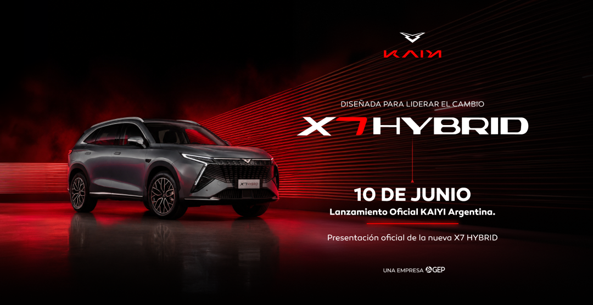
Nueva campaña X7 Hybrid
La nueva etapa de campaña consolidó 221 leads, 1.956 clics y más de 184 mil impresiones, extendiendo la captación post lanzamiento del X7 Hybrid.
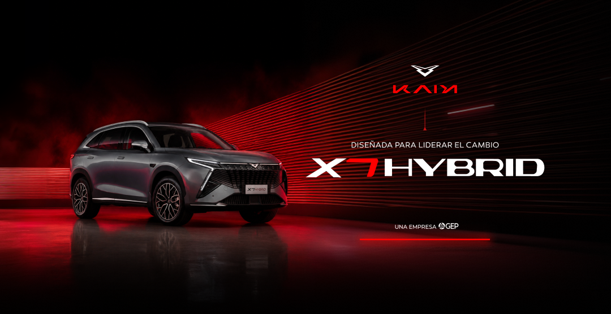
Medios directos
La pauta directa sumó 1.022.895 impresiones, 2.519 clics y una viewability promedio de 75,92%. iProfesional fue el medio más eficiente en interacción, con 1.215 clics y CTR de 0,51%.
09 · Orgánico Instagram · 26 mayo al 30 junio
El contenido orgánico del lanzamiento generó 553.439 visualizaciones, 127.756 cuentas alcanzadas, 2.637 interacciones, 4.628 clics y 7.580 visitas al perfil. La comunidad pasó de 530 seguidores al inicio del período a 1.826 seguidores actuales.
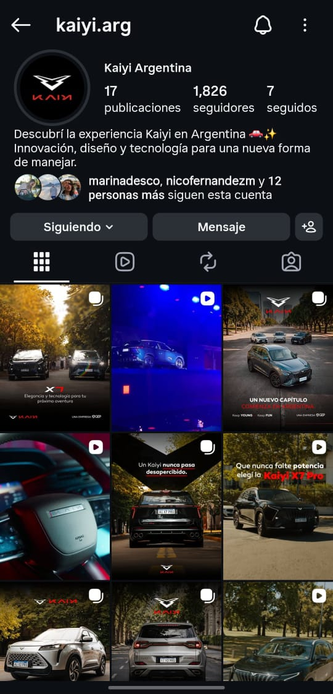
10 · Resultados finales
El cierre compara las metas previstas con los resultados conseguidos en asistencia, visualizaciones, captación de leads y cobertura de prensa.
Incluye contactos corporativos, concesionarios, GEP y otros asistentes registrados durante el evento.
Kaiyi Launch Event: experiencia, contenidos y resultados del lanzamiento en Argentina.